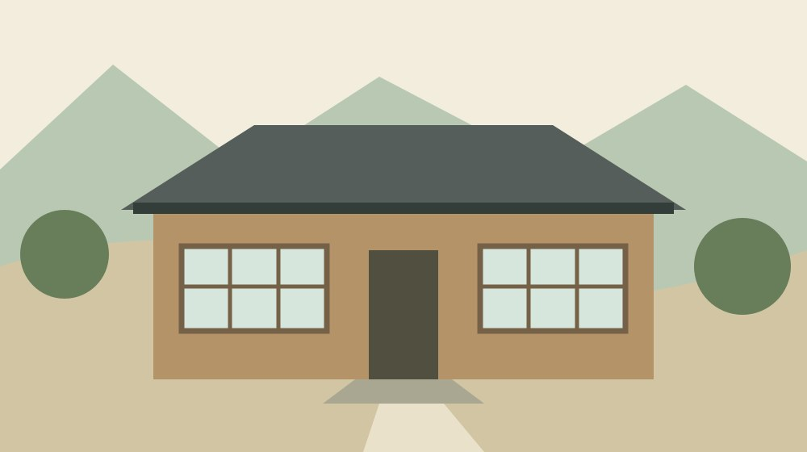
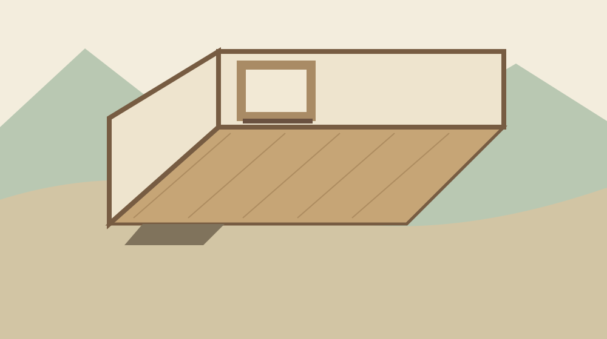

寺社・歴史
旧城下学校の建築｜森町に残る一室の校舎

Q. 旧城下学校の建物には、どんな特徴がありますか？
A. 旧城下学校は、1884年に上棟された木造平屋の校舎です。静岡県文化財団の資料は、教室や職員室に分けない一室と東側の床の間を特徴として挙げています。同資料では内部見学はできないと案内しています。今日は資料で建物の形を確かめ、見学できる前提で予定を組まないようにします。
旧城下学校は「一室」を手がかりに読む
森町に残る古い校舎を知るとき、まず建築年を探す方はいると思います。けれども、年代だけでは建物の使い方は浮かびません。旧城下学校で私が注目したいのは、教室と職員室に分かれていない空間です。部屋の数を見ると、学校という言葉から思い描く姿が少し変わります。
大石浩之（磐田市／不動産業）です。建物を残すには、持ち主や地域の方が手入れや連絡を引き受けます。その仕事を外から当然のことにはできません。この記事では、旧城下学校の内部を訪ねた体験として語らず、公表資料に書かれた形と、私の読み方を分けて整理します。
入口を通り、廊下を進んで、決まった教室へ入る。学校と聞いてそんな順序を思い浮かべても、旧城下学校の説明にはそのまま当てはめられません。今の学校の間取りを頭の中で重ねる前に、資料がどこまで述べているかを押さえます。見えない部分を想像で補わないためです。
学校の設置や地域の区分の変化を知りたい場合は、明治初期の学校所在地と行政区分をたどる記事を参照できます。本記事の問いは建物の空間です。学校の開校、今ある校舎の上棟、現在の見学条件を別の欄に置いて読むと、情報の取り違えを防げます。
1884年の上棟と、現在の見学案内を分ける
静岡県文化財団の「しずおか文化資源データベース」は、旧城下学校の現在の建物が明治17年、1884年に上棟されたと説明しています。開校当時は太林寺を校舎としていたという記述もあります。学校の始まりと、現存する校舎ができた時点は、同じ出来事として扱えません。
同データベースが説明する建物は木造平屋です。中央の玄関から入ると、教室や職員室として分かれた部屋はなく、一室の広い空間があるとしています。東側には床の間があるとの説明です。ここでは、この配置について確認できた範囲だけを建築の特徴として取り上げます。
同じページには、内部を見学できない旨の案内もあります。2026年10月29日に本文を確認しましたが、ページ自体の更新日は確認できませんでした。建築の説明を読めることと、建物に入れることは別です。紹介記事が存在するから公開施設だと判断するのは避けます。
文化庁は毎年11月1日から7日までを文化財保護強調週間と案内しています。ただし、全国の取り組みを紹介する期間の説明です。旧城下学校の特別公開を告知したものではありません。秋に文化財を知るきっかけにはできますが、個別施設の開館情報の代わりにはなりません。
中央の玄関と東側の床の間から考える
旧城下学校の空間を資料で読むなら、中央の玄関、一室、東側の床の間という三つの記述を、まず別々に受け取ります。入口の位置だけで室内の歩き方は確定しません。床の間があるからといって、そこで誰が何をしたかまで、今回の資料から説明することもできません。
私は、床の間の存在が学校建築への見方を変える手がかりになると考えます。学校という用途を知ってから建物を見るだけでは、住宅や座敷を連想させる要素を見落とすかもしれません。用途の名前と、実際の空間を形づくる部分を並べて読むと、問いが具体的になります。
例えば「先生はどこにいたのか」という疑問は自然です。しかし職員室が独立していないという説明だけで、先生の席の位置は決まりません。机の並び、授業中の動線、児童の人数についても、本記事では確定できません。建物の紹介と当時の授業風景の復元には、別の資料が要ります。
ここで使う挿絵は、一室の空間を考えるための概念図です。柱の本数、窓の数、出入口の寸法、床の仕上げを再現した復元図ではありません。図を見る際も、資料で確かめた特徴と、説明のために描いた要素を分けてください。現地で通行できる範囲を示す地図でもありません。

一室の建築を「何でも使える」と読まない
旧城下学校の一室という特徴は、部屋の分け方を知る情報です。建物の強さや、今後許される用途を示す情報ではありません。壁で区切られていない広さを見て、催しや仕事場にそのまま使えると結論づけることはできません。現状の性能と利用条件は別に確かめる対象です。
私が古い建物の用途を考えるなら、空間を使う案より先に、管理する人の仕事を書き出します。鍵を扱う人、雨の後に確かめる人、困ったときに連絡を受ける人です。旧城下学校で誰が担っているかをここで断定するものではなく、建物を引き受けるときの私の判断順序です。
部屋を増やす案には、仕切りを置く作業だけでなく、その後の使い方が伴います。逆に一室を保つ案にも、音や視線、冷暖房をどう扱うかという問いが残ります。これらは空間利用を検討するときの一般的な確認事項です。旧城下学校の設備に不具合があると指摘しているわけではありません。
木曜日の土地利用の視点からも、建物があることと利用できることを分けたいと思います。所在地が分かっても、敷地内への立入りや隣接地の通行が許されるとは限りません。今日は訪問経路を決めるより、建築の説明を読み、見学に関する案内を別に保存するところまでで十分です。
森町の民家や寺院と、部屋の分け方を比べる
森町公式「44 森町の民家」は、旧城下学校と旧周智郡役所が町の文化財に指定されていると説明しています。ページの更新日は2019年3月5日です。古い住宅だけでなく、学校や役所も町の建築を知る対象に含まれることが分かります。指定の説明を現在の公開予定へ読み替えないようにします。
同じ町公式ページは、単体の建物に加えて町並み全体を保全する視点も示しています。私は、この見方に意味があると考えます。一棟だけを写真の対象にすると、その周囲で暮らす人の出入りや日常の道を見落としやすくなるからです。建物の紹介を読むときにも、暮らしがある場所だと意識します。
森町公式「46 森町の寺院建築」では、本堂の空間を内陣や大間などの呼び名と、部屋の構成から説明しています。こちらも2019年3月5日更新です。旧城下学校とは用途の違う建築ですが、部屋の配置と言葉を対応させて読む方法の参考になります。寺院の形式を学校へそのまま当てはめるものではありません。
比べる際は、建築年の新旧だけを順位にしないようにします。入口はどこか、部屋は分かれているか、用途を示す場所はあるか。問いをそろえてから相違を見ます。藤江家と旧郡役所の活用を比べた記事も、建物の価値と利用条件を分ける補助線になります。
良い点｜資料からでも空間の特徴に近づける
旧城下学校の公表資料の良い点は、建築年だけでなく室内の構成まで説明していることです。私は、訪ねた回数や撮影枚数だけで建物の理解が深まるとは考えていません。短い説明でも「どの部屋があるか」という問いに答えがあれば、形を考える入口になります。
中央の玄関から一室へ入る構成を知ると、外観の写真を見るときの関心も変わります。私は、正面の印象だけでなく、入口と室内がどう結び付くかを考えたくなります。ただし、写真に写っていない奥行きや裏側まで分かったことにはしません。新しい疑問を持てることが、資料を読む利点です。
資料が内部見学についても案内している点は、予定を組む家族にとって助けになります。行ってから入れないと知るより、出発前に目的を整理できます。私は、公開の範囲を明確にする情報を、建物の魅力を弱める注意書きとしてではなく、訪ねる側と守る側をつなぐ案内として受け取ります。
資料だけで知る時間を認めれば、現地を案内する人が対応できる日に予定を合わせる余地もできます。これは今すぐ特別公開を増やしてほしいという主張ではありません。地域の担い手へ新たな仕事を頼む前に、読者の側で学べる部分を進めておく。その順序なら、関心を負担へ直結させずに済みます。
注文したい点｜分からない場所を残したまま伝える
旧城下学校の説明を読む側として、私は資料の時点と見学案内の関係が分かると助かると考えます。更新日が見つからない情報では、建築の説明と利用条件のどちらがいつ確認されたかを分けにくいためです。担当する人を責めるのではなく、読者の迷いを減らす表示への要望です。
一室という説明だけでは、床面積や天井の高さ、柱の配置までは把握できません。図面の公開状況も、今回の資料からは確認できませんでした。私は詳しい数値を記事に足したい気持ちもありますが、根拠がない寸法を置けば、読みやすさと引き換えに建物を別の姿へ変えてしまいます。
不足を埋めるために、地図の画像や写真から無理に寸法を割り出す方法も取りません。撮影位置や縮尺が分からないまま、推定値だけが独り歩きするおそれがあるからです。今日は「面積は未確認」と記録できます。空欄がある資料でも、確認できた部分まで失われるわけではありません。
保存の担い手、年間の維持費、修理の具体的な予定についても、本記事で示せる資料はありません。建物が古いという理由だけで、管理が行き届いていないとも、今のままで支障がないとも判断しません。関心がある人が最初にできるのは、既存の公表資料を読み、質問を絞ることです。
対案・結論｜今日は紙に一室と書いてみる
旧城下学校を知る今日の一歩は、文化資源データベースを開き、一枚の紙に「中央の玄関」「一室」「東側の床の間」と書くことです。図面を完成させる作業ではありません。文章にある位置関係を確かめ、資料で分かった範囲を手元に残すための簡単な読み取りです。
紙に四角を描くなら、実際の縦横比を表すものではないと端に添えます。窓や柱、机の配置は、確認できない限り加えません。資料の内容と、自分が思い浮かべた景色を区別するためです。家族と一緒に読む場合は、それぞれが何を想像したかを話すと、説明のない部分にも気づけます。
次に、建物の特徴を書いた紙とは別に、見学案内のURLと確認日を保存します。歴史の情報を読み返す日と、訪問を考える日は違うかもしれません。後日外出の候補にする場合は、保存した画面だけで判断せず、案内元の現在の情報へ戻れるようにしておきます。
問い合わせが必要になったら、学校名と知りたい事項を一つに絞ります。例えば、空間構成を読める公開資料の所在を聞くことと、見学の可否を聞くことは別の質問です。資料に答えがある内容を整理してから連絡すれば、受け取る側も何を確かめればよいか分かりやすくなります。
家族に残す記録は、建物の名前と根拠をセットに
旧城下学校について家族に伝える記録は、建物名、情報元、確認日、未確認事項をセットにすると読み返しやすくなります。「古い学校がある」とだけ伝えるより、一室という特徴をどの資料で知ったかを添えます。話を受け取った人が、元の説明へ戻れる形にするためです。
自宅や実家の資料を整理するときにも、私は同じ分け方を勧めたいと思います。古い間取り図があっても、いつの状態か分からなければ、今の建物と同一とは扱えません。書類の表題と日付を残し、増改築など自分には分からない部分を空欄にしておくほうが、後の確認に役立ちます。
建物の価値を話す記録と、所有や管理の書類は目的が異なります。旧城下学校を調べた内容から、個別の家の権利や修理条件を判断することはできません。家族の建物で具体的な手続きを考える段階では、手元の資料をそろえ、内容に応じた窓口や専門家へ確認する必要があります。
地域の人と建物の関係をもう少し知りたい方には、森町城下の商いと人材育成を扱った藤江金兵衛の記事もあります。ここでは人物の働きから地域を読みます。校舎の平面を読む本記事と視点を分けておくと、建物を一つの物語だけで理解したつもりにならずに済みます。
大石の視点｜使う案の前に、残っている形を知る
旧城下学校について私は、空間の使い道を提案する前に、残っている形を丁寧に知りたいと考えます。これは現地で見聞きした実話ではなく、資料を読んだ私の意見です。一室を便利な空きスペースと呼んでしまうと、学校建築として残されてきた特徴が説明から消えてしまいます。
私の商売の目線では、建物に新しい役割を加える話ほど、その後の管理を誰が引き受けるかが気になります。人が集まれば成功と決めず、開ける日、閉める日、片付ける人まで考えたいところです。旧城下学校の運営実態を知った上での評価ではなく、利用を考えるときの私の基準です。
一方で、保存の負担を気にするあまり、関心を持つことまで遠慮してほしくはありません。私にも、伝える情報をどこまで増やすかという迷いがあります。だからこそ、見学への誘導を急がず、資料を一緒に読む入口を用意します。建物への関心は、必ずしも現地へ入ることから始まるものではありません。
建物の価値は、見学できる日数では決まりません。残されてきた空間を説明できる言葉が増えることにも意味があります。今日は入口と一室、床の間の関係を確かめる。訪問や活用の判断は、その後に必要な情報をそろえてからでよいと私は考えます。
文化財保護強調週間の前に、一つの形を覚える
11月1日から7日までの文化財保護強調週間を前に、旧城下学校の一室という特徴を資料で読む時間を持てます。行事に参加することだけが学び方ではありません。建物の紹介を読んで、思い込みと資料の説明が違う部分を一つ見つける。それだけでも、地域の建築への見方が変わります。
2026年10月29日時点でこの記事が案内する行動は、文化資源データベースで空間構成を確かめることです。旧城下学校の特別公開や自由な立入りを案内する記事ではありません。家族に共有するときも、写真や題名だけを送らず、内部見学に関する説明を一緒に伝えてください。
よくある質問
旧城下学校の特徴と見学条件について、建築の説明と利用の案内を分けて答えます。
旧城下学校の建築は何が特徴ですか？
静岡県文化財団の文化資源データベースは、1884年に上棟された木造平屋の校舎と説明しています。中央の玄関から入る一室の空間と、東側の床の間が特徴です。教室や職員室に分かれていない点に注目できます。ただし、机の配置や児童の人数、授業中の使い分けまでは、この記事で確認した資料から分かりません。
旧城下学校の内部は見学できますか？
2026年10月29日に確認した静岡県文化財団の文化資源データベースは、内部見学ができないと案内しています。資料の更新日は確認できませんでした。過去の行事や紹介写真を、現在の公開の根拠にしないでください。訪問を検討する場合は、案内元へ最新条件を確かめ、敷地への立入りも自由だと判断しないようにします。
文化財保護強調週間には特別公開がありますか？
文化庁は毎年11月1日から7日までを文化財保護強調週間と案内しています。ただし、その説明だけでは旧城下学校の特別公開の有無は分かりません。本記事では2026年の同校の特別公開を確認していません。全国の期間案内と個別施設の開催告知を分け、まずは公表資料で建築の形を知る読み方を紹介しています。
公式情報源
2026年10月確認。本文の確認日は2026年10月29日です。
施設の案内、利用条件、数値は変更される場合があります。最新情報は案内元へ確認してください。個別の建物の修理・利用・権利に関する判断は、事情に応じた窓口や専門家へ相談してください。